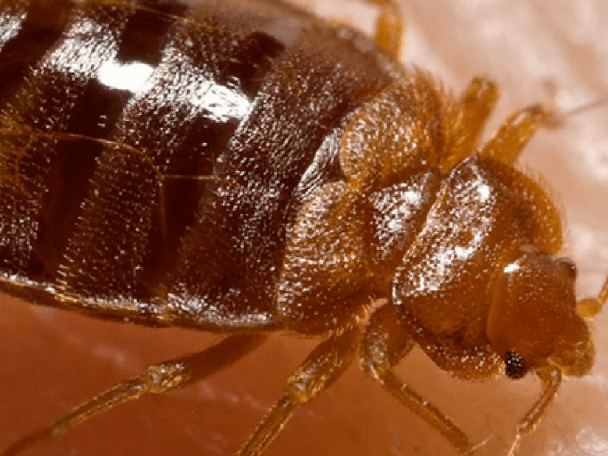
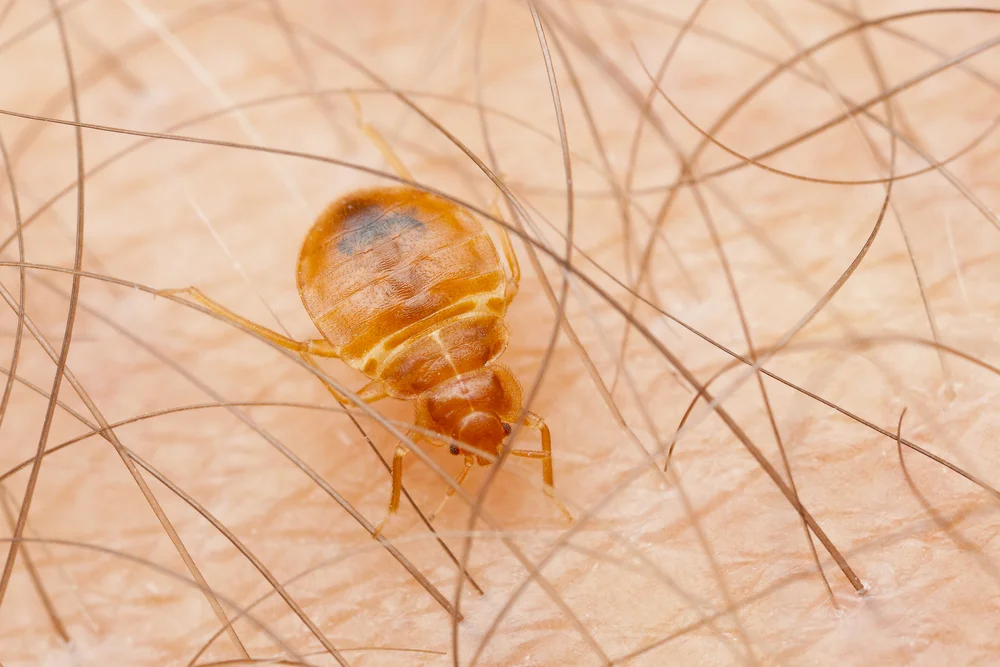

Sociétés traitement punaises de lit Casablanca
Société de traitement punaises de lit Casablanca, la punaise de lit, de son nom scientifique Cimex Lectularius, également connue sous le nom de puce de lit, est un nuisible qui a récemment refait surface. La punaise de lit avait presque disparu il fut un temps avec l'usage de puissants insecticides, mais avec les nouvelles réglementations, il est devenu plus difficile d'arrêter la propagation de punaises de lit. Les puces trouvent leur confort dans notre environnement, et elles voyagent (au sens propre) avec nous dans nos bagages, ce qui permet une propagation internationale des puces de lit.
Détecter et identifier la punaise de lit
La punaise de lit est un insecte rampant et elle est visible à l'œil nu. De couleur brune, la punaise de lit est plate mais peut paraître un peu ronde lorsqu'elle vient de se nourrir. Une punaise de lit adulte mesure entre 5 et 7 mm de long.
Les punaises de lit ne savent pas voler et elles se cachent dans les planchers, sous et derrière les meubles, dans la literie (matelas, pieds de lit, derrière la tête de lit…), et en cas d'infestation sévère, sur le parquet. Elles préfèrent l'obscurité et ont à tendance à se cacher lorsque l'on allume la lumière.
Découvrez la détection canine des punaises de lit avec nos équipes de chiens entraînés à la détection des punaises de lit : là où l'œil ne le verra pas, le flair de nos équipiers canins pourra dénicher les punaises de lit même les mieux cachées.

Punaise de lit : alimentation et mode de vie
La punaise de lit se nourrit de sang tout au long de sa croissance. Elle est à l'origine de piqûres très désagréables qui peuvent dans certains cas déclencher des réactions allergiques sérieuses.
Les punaises de lit sont attirées par le CO2 que nous dégageons; ce qui fait des endroits où nous restons souvent (le lit dans lequel nous dormons le soir notamment et la chambre par extension) une source idéale de nourriture pour elles.
Il est possible de voir des traces ou des tâches noires sur votre matelas ou sur vos meubles alentours, voire des tâches de sang : c'est souvent un signe d'une
infestation de punaises de lit à Casablanca. Cependant, il peut arriver de ne rien voir malgré la présence de punaises de lit.
Les punaises de lit peuvent survivre pendant plus d'un an si les conditions de vie leurs sont favorables.
infestation de punaises de lit à Casablanca. Cependant, il peut arriver de ne rien voir malgré la présence de punaises de lit.
Les punaises de lit peuvent survivre pendant plus d'un an si les conditions de vie leurs sont favorables.
D'où viennent les punaises de lit ?
Traitement punaises de lit Casablanca, Les principales sources d'invasion de punaises de lit sont les meubles anciens et les voyageurs qui les transportent dans leurs bagages et leurs vêtements.
Les punaises de lit se propagent d'un environnement humain à un autre, et une fois installées dans une pièce, rien ne les empêche non plus de se propager dans les pièces voisines. Dans le cas d'un hôtel, si une chambre est infestée par des puces, les chambres voisines peuvent également être infestées.
Quels risques avec les punaises de lit ?
Aujourd'hui, les voyageurs accordent une grande importance à la réputation d'un hôtel ou d'une auberge et aux avis des autres visiteurs sur les sites Internet spécialisés ou les réseaux sociaux.
Un seul commentaire mentionnant « punaises de lit » ou « puces de lit » fera fuir vos clients.
Si vous êtes gérant ou propriétaire d'un hôtel, d'une auberge, d'un foyer, ou d'un internat, vous devez agir rapidement pour conserver la réputation de votre établissement intacte et protéger vos clients et pensionnaires.
Piqûre de punaise de lit
Traitement punaises de lit Casablanca, la piqûre de punaise de lit se fait souvent la nuit ; lorsque nous sommes inactifs, ce sont les punaises de lit qui le sont. Les piqûres de punaises de lit réveillent très rarement car elles s'accompagnent d'une injection d'anesthésiant.
Bien qu'elles ne sont pas connues pour transmettre de maladies, les piqûres de punaises de lit n'en restent pas moins gênantes : elles peuvent générer énormément d'anxiété et de stress, au point d'entraîner des dépressions dues au manque de sommeil causé par la peur d'être envahi par des punaises de lit.

Guides sur les punaises de lit
Les punaises des lits (Cimex lectularius) ne doivent pas être confondues avec les acariens. Les punaises de lit sont des parasites nocturnes qui se nourrissent de sang sur les mammifères à sang chaud.
Les acariens sont des araignées microscopiques qui se nourrissent des peaux mortes. Les acariens de poussière ne sont pas visibles à l'œil nu.
Cimex lactucariums
Apparence
- Les punaises de lit mesurent environ 5 à 6 mm de long avant de s'être nourries, puis environ 7 mm après s'être gorgées de sang.
- Elles sont ovales, aplaties du dos jusqu'au ventre, avec des pattes épaisses et bien développées. Les < n'ont>punaises de lit n'ont pas d'ailes.
- Leur bouche est en pointe, afin de percer et d'aspirer. Les adultes sont de couleur brun rouge (rouille).
- Les œufs sont blanc crème, plus foncés lorsqu'ils sont sur le point d'éclore pour produire une larve.
- Leur mue est brun clair et ressemble à un exosquelette.
Cycle de vie/strong
- Les punaises pondent de 200 à 500 œufs sur une période de 2 mois, par pontes de 10 à 50 œufs.
- La femelle adulte se nourrit de sang avant de pouvoir pondre.
- Généralement, les œufs sont pondus dans les fissures et les fentes et peuvent être collés à des meubles ou des revêtements par une substance transparente.
- Il y a 7 étapes de cycle de vie entre l'œuf et l'adulte, qui peuvent aller de 45 jours à un an.
- La durée de vie typique d'une punaise de lit est d'environ 50 jours à plus d'un an si les conditions sont favorables.
- Elles peuvent survivre sans nourriture pendant plusieurs semaines, voire des mois.
Habitudes
- Les punaises se nourrissent de sang humain et sont attirées par la chaleur et le CO2 émis par les êtres humains pendant leur sommeil.
- Elles injectent un anesthésiant quand elles percent la peau, de sorte que la piqûre peut passer inaperçue au début.
- Elles logent dans les fissures et les fentes, les têtes de lit, derrière la tapisserie qui se décolle, dans le plâtre cassé, les interrupteurs, sous les tapis et les plinthes, afin d'être près des personnes, leur source de nourriture.
- Généralement, les punaises de lit se nourrissent juste avant l'aube. Lorsqu'elles ont peur, elles se déplacent rapidement et émettent une odeur.
Prévention contre les punaises de lit
Qu'elles soient dans votre habitation ou votre hôtel, les punaises de lit sont des hôtes indésirables et inquiétants. Les hôtels qui accueillent beaucoup de voyageurs internationaux, ou les domiciles des personnes amenées à voyager sont particulièrement concernés.
Les solutions de prévention et de détection comme une inspection approfondie ou la formation de votre personnel permettent d'éviter que les punaises de lit ne se propagent à l'intérieur de votre bâtiment.
Les experts anti punaises de lit de WINBEST DÉRATISATION sont spécialisés dans la prévention contre les punaises de lit dans l'ensemble du Maroc. Ils ont une excellente connaissance de chaque situation locale et s'appuient sur notre expérience internationale de 85 ans. Ainsi, vous pouvez être sûrs que la réputation de votre hôtel et la santé de votre famille sont entre de bonnes mains.
Conseil : si vous avez un problème de punaises de lit, évitez d'aller dormir chez vos proches. Vous risquez de propager l'infestation chez vos amis et votre famille. Préférez plutôt une solution rapide et efficace afin de vous débarrasser des punaises de lit une bonne fois pour toutes.
Se débarrasser des punaises de lit à Casablanca et partout au Maroc
Les insecticides vendus en grandes surfaces ne suffisent pas à traiter les punaises de lit. Il s'agit d'un nuisible tenace et qui réapparaîtra forcément si le traitement n'a pas exterminé toutes les punaises de lit.
Pour votre tranquillité d'esprit, il est préférable et vivement conseillé de contacter un désinsectiseur qui sera à même de traiter votre problème de punaises de lit de fond en comble afin de vous assurer que le problème ne resurgira pas.
Exigez un traitement qui vous permettra d'éliminer les puces de lit plutôt qu'un traitement partiel. Un traitement bien réalisé sera au final bien moins cher que plusieurs traitements partiels qui ne vous donneront que du fil à retordre.
Nos désinsectiseurs proposent des solutions innovantes sans produit toxique qui peuvent exterminer les punaises de lit en un seul traitement, comme avec le traitement thermique anti-punaises de lit Entotherm par WINBEST DÉRATISATION.
FAQ sur les punaises de lit
Comment les punaises du lit peuvent-elles gêner ?
Le problème lié aux punaises de lit ou puces est que les clients peuvent être piqués. Les punaises se déplacent facilement et, si elles ne sont pas éliminées de manière professionnelle, peuvent rapidement atteindre un niveau épidémique. Les solutions spécialisées ne sont proposées que par des entreprises professionnelles de protection contre les parasites, afin de vous débarrasser des punaises de lit.
De quoi se nourrissent les punaisses du lit ?
Les punaises de lit se nourrissent de sang humain.
Quelles mesures prendre face aux punaises du lit ?
Il n'est pas recommandé d'essayer d'éliminer les punaises par vous-même, mais plutôt de demander l'aide de professionnels.
Quel traitement contre les punaises du lit ?
Le nouveau système de traitement thermique utilise des produits chimiques tout en tuant les punaises de lit à tous les stades de développement et ce en un seul traitement.